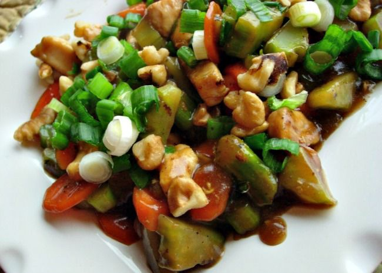

Home
Chicken Honey Nut Stir Fry

Description
A simple yet elegant chicken dish, stir fried with carrots, celery and an orange honey sauce. This recipe is from The WEBB Cooks, articles and recipes by Robyn Webb, courtesy of the American Diabetes Association. Preparation time: 20 minutes
Ingredients
- 2 teaspoons peanut oil
- 2 stalks celery, chopped
- 2 carrots, peeled and diagonally sliced
- 1 ½ pounds skinless, boneless chicken breast halves - cut into strips
- 1 tablespoon cornstarch
- ¾ cup orange juice
- 3 tablespoons light soy sauce
- 1 tablespoon honey
- 1 teaspoon minced fresh ginger root
- ¼ cup cashews
- ¼ cup minced green onions
Directions
- Heat 1 teaspoon of the oil in a wok over high heat. Add the carrots and celery and stir fry for 3 minutes. Add remaining 1 teaspoon oil, then add the chicken and stir fry for 5 more minutes.
- In a small bowl, dissolve the cornstarch into the orange juice. Mix in the soy sauce, honey and ginger. Add this sauce to the wok and cook over medium heat until thickened. Top with the cashews and green onions.